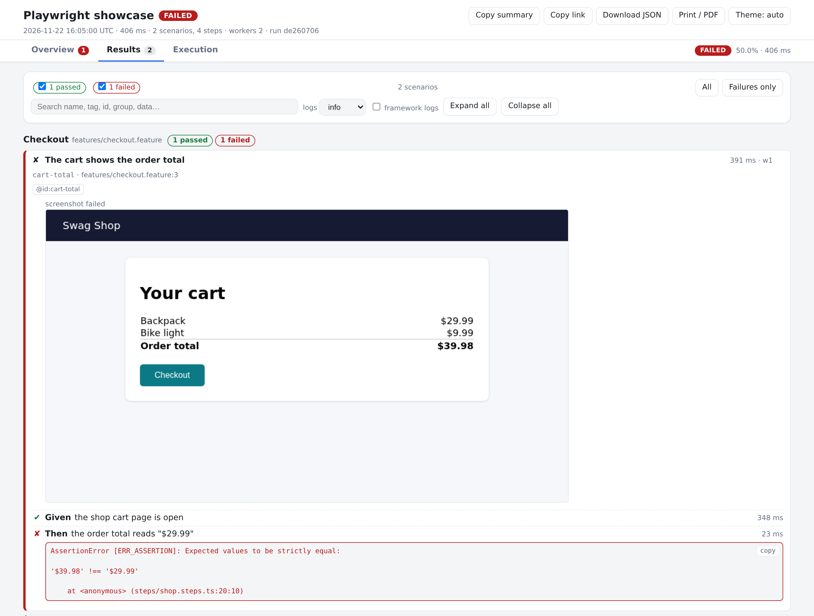

Playwright
bddr stays the runner, with groups, retries, shards and reports. The plugin hands you Playwright itself, so everything Playwright can do in a script is available in a step.
Install
$ npm i -D file:../bddr/plugins/playwright playwright @playwright/test
$ npx playwright install chromiumPS> npm i -D file:../bddr/plugins/playwright playwright @playwright/test
PS> npx playwright install chromium$ npm i -D file:../bddr/plugins/playwright playwright @playwright/test
$ npx playwright install --with-deps chromium@playwright/test is optional. It is only needed for the expect fixture. Use the same version as playwright.
Configure
import { defineConfig } from '@bddr/cli';
import { playwright } from '@bddr/playwright';
export default defineConfig({
features: 'features/**/*.feature',
steps: 'steps/**/*.ts',
plugins: [
playwright({
browser: 'chromium',
screenshot: 'only-on-failure',
trace: 'only-on-failure',
testIdAttribute: 'data-test',
expectTimeoutMs: 7000,
context: { baseURL: 'https://www.saucedemo.com', viewport: { width: 1280, height: 800 } },
}),
],
});Add import '@bddr/playwright'; to one support file so ctx.page, ({ page }) and inject('page') are typed.
Use it in steps
import { Given, When, Then } from '@bddr/runtime';
Given('I open {string}', ({ page }, path: string) => page.goto(path));
When('I sign in as {string}', async ({ page }, user: string) => {
await page.getByPlaceholder('Username').fill(user);
await page.getByRole('button', { name: 'Login' }).click();
});
Then('the heading is {string}', async ({ page, expect }, text: string) => {
await expect(page.locator('h1')).toHaveText(text); // retries until expectTimeoutMs
});Everything in Playwright works as documented: auto-waiting, getByRole, route, waitForResponse, storageState, HAR, permissions, geolocation, locale and timezone.
Fixtures
| Name | Scope | What you get |
|---|---|---|
playwright | worker | The playwright module: devices, selectors. |
browser | worker | Launched on first use. One per worker process. With the inline pool, concurrent scenarios share it. |
context | scenario | A fresh BrowserContext per attempt: isolated cookies and storage. Trace and video belong to it. |
page | scenario | A page in that context. A screenshot is taken at the end. |
request | scenario | An APIRequestContext for API calls. Never starts a browser. |
expect | worker | Playwright's retrying expect. Needs @playwright/test. |
newContext | scenario | await newContext({ locale: 'de-DE' }) gives a second isolated context, closed after the scenario. |
A scenario that names none of these starts no browser. A retry gets a fresh context and page.
Options
| Option | Default | What it does |
|---|---|---|
browser | 'chromium' | 'chromium', 'firefox' or 'webkit'. -D browser=firefox overrides. |
channel | Chromium only: 'chrome', 'msedge'. | |
headless | true | -D headed=true shows the browser. |
launch | Extra launch() options: slowMo, args, proxy. | |
context | newContext() options: baseURL, viewport, locale, storageState. -D baseURL= overrides baseURL. | |
request | request.newContext() options. baseURL defaults to the context's. | |
device | A Playwright device name such as 'Pixel 7'. -D device= overrides. context options win over it. | |
testIdAttribute | 'data-testid' | Attribute used by getByTestId. |
connect | { wsEndpoint, options }: connect to a running Playwright server instead of launching. | |
cdpUrl | Chromium only: connect over CDP to a running browser, such as 'http://localhost:9222'. | |
expectTimeoutMs | 5000 | Timeout of expect assertions. |
actionTimeoutMs, navigationTimeoutMs | Playwright's | Default timeouts of the context. |
screenshot | 'only-on-failure' | 'off', 'on' or 'only-on-failure'. Full page, attached to the report. |
trace | 'off' | Same values. Saved in outputDir/traces. Open with npx playwright show-trace file.zip. |
video | 'off' | Same values. Saved in outputDir/videos. |
outputDir | 'reports/playwright' | Relative to the working directory. |
reuseContext | 'off' | 'serial' makes every @serial feature share one context and page. |
One browser session for a whole feature
@serial @reuseContext
Feature: Checkout journey
Scenario: Log in
Scenario: Add to basket # same page, still logged in
Scenario: Pay # same page@reuseContextneeds@serialon the feature. Without it you get an error.@freshContexton a scenario opts out.- The browser stays open. The context and page close when the feature ends.
- Screenshots are still taken per failed scenario. The trace and video cover the whole feature.
- If you select one scenario of the feature, it runs alone on a new session and does not replay the earlier ones.
Run it
$ npx bddr run -D browser=firefox
$ npx bddr run -D headed=true --workers 1
$ npx bddr run --pool process --workers 4
Examples
plugins/playwright/exampleruns offline with a local server.examples/playwright-showcasehas 139 scenarios against public sites, with page objects, groups, API steps and mixed UI and API.